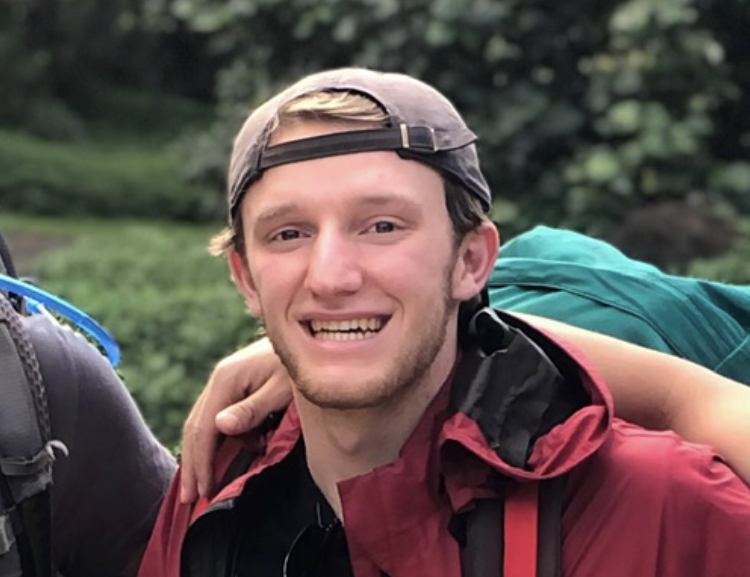
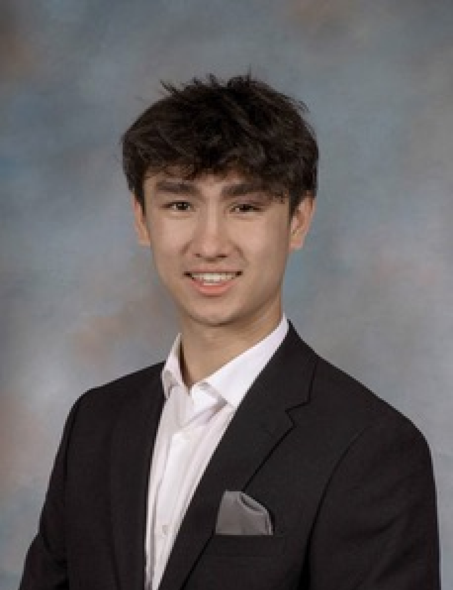
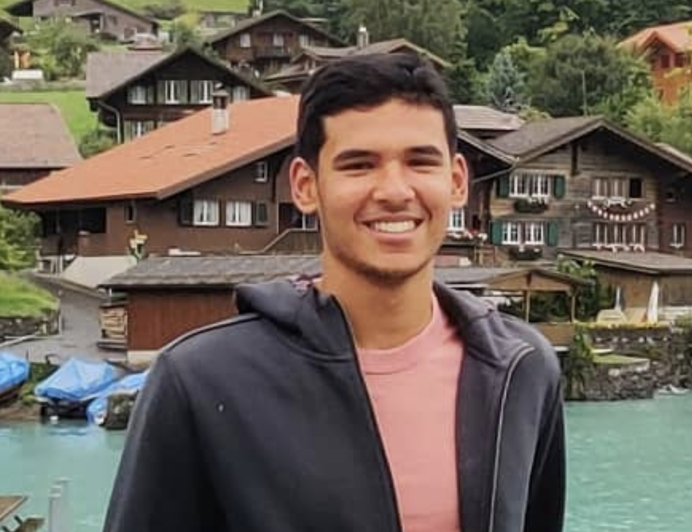
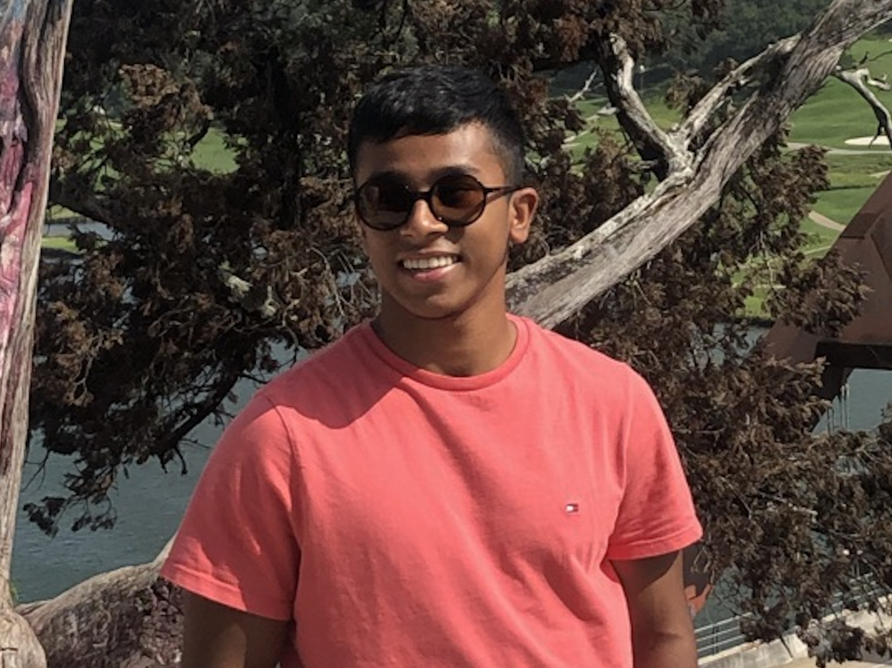

The executive committee is SigEp's primary leadership. Our annually elected officials guide the chapter's internal operations as well as foster external relationships with other Greek organizations and the Carnegie Mellon community. Read more below about the 2025-2026 executive committee.

Nick is the current President of SigEp. He is a double major in Business Administration and Statistics from Radnor, Pennsylvania. His past roles include Vice President of Finance and Balanced Man Scholarship Chair. He would like to help bring back the traditions from before COVID, including the big 3, with help from his great executive committee.

André currently serves as the Vice President of Programming for SigEp at CMU. He is an Information Systems major from Baton Rouge, Louisiana and joined in the Fall of 2023. In the past, he has been Social Chair, New Member Educator, and Kitchenman. He would love to contribute to an open-minded Greek community where people from all walks of life find their closest friends.
Brady is the current Vice President of Finance for SigEp. He is a Statistics and Machine Learning major from Pittsburgh, Pennsylvania. He is interested in building balanced men. He would like to help the development of balanced men within the fraternity.

Raj is the current Vice President of Membership Development for SigEp. He is a double major in cognitive science and robotics from Antwerp, Belgium. In the past, Raj was an active member of the rush committee where he helped recruit new members. As the VPMD, He aims to integrate new members into the SigEp culture to create more balanced men.
Arjun is the current Vice President of Recruitment for SigEp. He is a double major in Business Administration and Human-Computer Interaction from Cincinnati, Ohio. Since joining SigEp his freshman fall, he has served as Philanthropy chair, Greek Sing chair, Social Media chair, and AVC chair. Outside of SigEp, he loves traveling and playing sports, especially IM flag football and pickleball with his brothers. As VPR, Arjun hopes to improve the recruitment process, bring in members who fit SigEp’s culture, and leave a lasting impact on the chapter.

Tharun is the current Vice President of Communications for SigEp. A Business Administration and Human-Computer Interaction double major from Pittsburgh, Pennsylvania, he joined SigEp in Fall 2024 and also serves as Social Chair. He loves traveling and finding new music. This year, he aims to create new, exciting experiences for brothers and continue building on the chapter's legacy.
Edelio is the current Chaplain of SigEp. He is an Electrical and Computer Engineering major and an additional major in Robotics from Miami, Florida. Other roles he has include room chair and sound soul. Edelio enjoys playing video games and spending time in nature with friends. He aims to promote a culture of philanthropy and accountability within the fraternity.